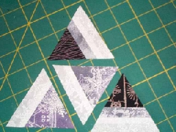
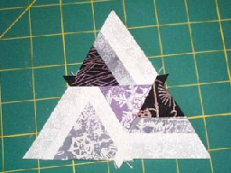
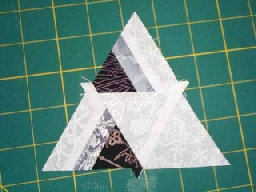
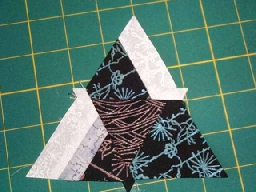
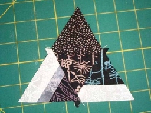
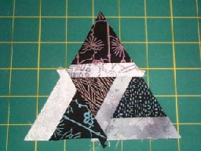
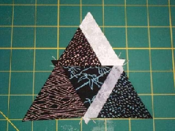
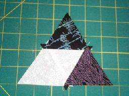
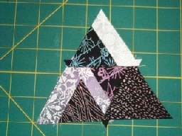

P.O. Box 1342 * Bellevue, WA 98009 * jlk@eskimo.com
 2000 Jane L. Kakaley
2000 Jane L. Kakaley
PART FIVE
If you have not yet completed Part Four, please finish before continuing with Part Five.
1. Arrange the following triangles:
 two from Strata 3 and
two from Strata 3 and
two from Strata 4
as shown in Figure 19.

Figure 19
2. Sew together to create the larger triangle shown in Figure 20.

Figure 20
3. Repeat steps 1 and 2, making a total of 6(54) triangles.
4. Arrange the following triangles:
two from Strata 4 and
two from fabric W
and sew together as shown in Figure 21.

Figure 21
5. Repeat step 4, making a total of 6(54) triangles.
6. Arrange the following triangles:
one from Strata 1
one from Strata 4 and
two from fabric B
and sew together as shown in Figure 22.

Figure 22
7. Repeat step 6, making a total of 6(54) triangles.
8. Arrange the following triangles:
one from Strata 1
one from Strata 4 and
two from fabric B
and sew together as shown in Figure 23.

Figure 23
9. Repeat step 8, making a total of 6(54) triangles.
10. Arrange the following triangles:
one from Strata 1 and
three from Strata 2
and sew together as shown in Figure 24.

Figure 24
11. Repeat step 10, making a total of 12(108) triangles.
12. Arrange the following triangles:
one from Strata 1
one from Strata 2 and
two from fabric B
and sew together as shown in Figure 25.

Figure 25
Hint: The center triangle is from fabric B.
13. Repeat step 12, making a total of 6(54) triangles.
14. Arrange the following triangles:
two from fabric W and
two from fabric B
and sew together as shown in Figure 26.

Figure 26
15. Repeat step 14, making a total of 6(54) triangles.
16. Arrange the following triangles:
one from Strata 1
two from Strata 2 and
one from fabric B
and sew together as shown in Figure 27.

Figure 27
17. Repeat step 16, making a total of 6(54) triangles.
Part Six will be available October 1st. Have fun!